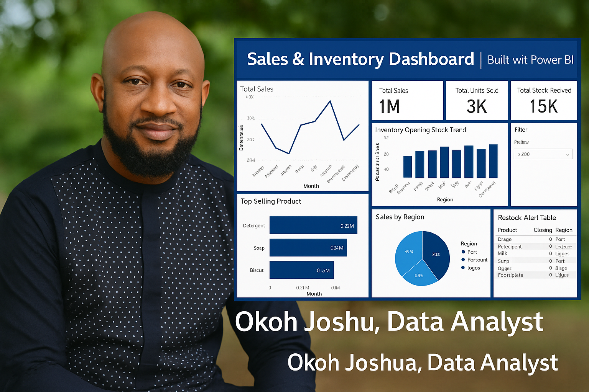

About

Hello! I'm Okoh Joshua, a passionate data analyst dedicated to helping businesses unlock the power of their data. I specialize in building interactive dashboards, cleaning and structuring messy datasets, and extracting actionable insights that drive smart decisions.
With a strong foundation in Power BI, Excel, and business analytics, I’m committed to delivering results that are both visually compelling and strategically valuable — whether you need sales tracking, customer segmentation, or clean spreadsheets ready for reporting.
Featured Projects
📊 Sales & Inventory Dashboard (Power BI)
Built an interactive Power BI dashboard to track sales trends, product performance, and inventory restock alerts.
👥 Customer Segmentation with RFM (Power BI)
Segmented customers using Recency, Frequency, and Monetary scores. Visualized behaviors to optimize marketing strategies.
🍕 Pizza Sales Report (Excel Dashboard)
Created an Excel dashboard to analyze pizza sales data including top products, peak days, and sales trends.
🧹 Data Cleaning & Entry (Excel/Power BI)
Cleaned, validated, and structured raw Excel data for business-ready insights. Automated formatting and created custom KPIs.